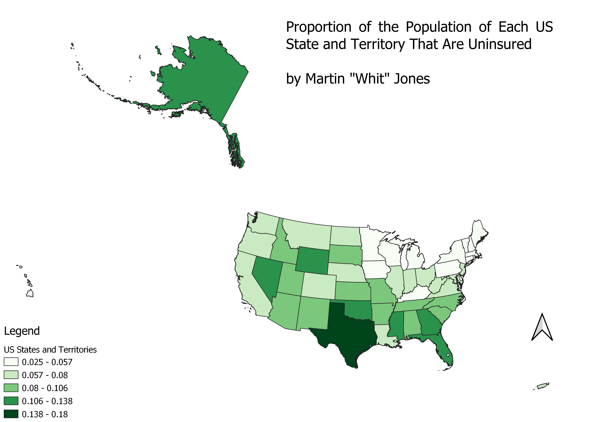

Homework 7: Make a choropleth map
Martin "Whit" Jones
This map depicts the proportion of the population of each US State that is uninsured, with the deeper colored states having a larger proportion of the state lacking health insurance. I chose this topic because I am interested in healthcare outcomes throughout the US, and would potentially want to do research to improve the healthcare system of the US.

Data used for this project
Cleaned CSV Dataset
Source of the CSV
Link to Vector File